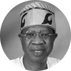

<section class="testimonies-area">
  <div class="container-fluid">
    <div class="text-center">
      
      <p>
        “As part of the efforts to make Nigeria a digital economy and inline
        with the current Covid19 crisis, the entire event with the exception of
        the demo day will be done remotely via an online portal. This ensures
        safer, faster, transparent and more effective execution.”
      </p>
      <p>
        <strong>
          Dr. Isa Pantami • Minister of Communications and Digital Economy
        </strong>
      </p>
    </div>


    <div class="text-center">
        
        <p>
            “The new brand must be impactful both at the national level postering unity
            and at international level improving positive impression of the country.”
        </p>
        <p>
          <strong>
    Lai Muhammad • Minister of Information and Culture
          
          </strong>
        </p>
      </div>


  </div>
</section>


